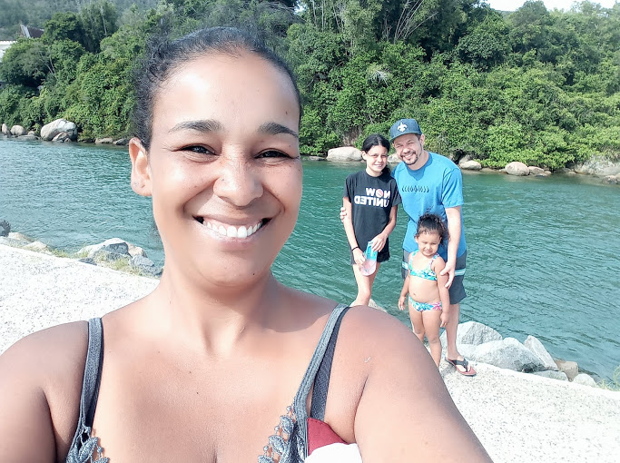

"Quem eu sou?
"Sou Vanessa , sou de São Paulo - SP .
Casada há 13 anos com Flávio , mãe de 2 meninas lindas Laís e
Lorena ."

"Foto a cima, estou com os cabelo soltos escovados e sorrindo!"
"Sou formada em Gestão da Qualidade e Técnica em Química.
Estou há 4 anos fora do mercado de
trabalho,
onde nesse período concluí meu curso em Química e trabalhei como manicure."

"Foto da formatura da faculdade em Gestão da Qualidade."
Minhas habilidades.
- Dedicação
- Resiliência
- Flexibilidade
"Um pouco mais sobre mim!"
"Em meus momentos de lazer, gosto muito de estar com minha família,
seja uma
almoço em família, ou uma ida aoshopping ou viajando!
Nossa última viagem foi à Florianópolis - SC

Adoro ficar assistindo filmes e séries, de quase todo tipo e genêro (não gosto
das de terror), gosto
dos clichês adolecentes, suspense, romance e por aí vai...
E para me manter sempre
informada sigo alguns canais no YouTube e um dos que mais gosto de assistir é o canal da Mikannn,
descobri o
canal dela assistindo "GOT" desde então a sigo!
"Canal da MiKannn"